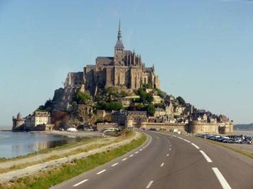
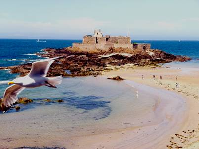
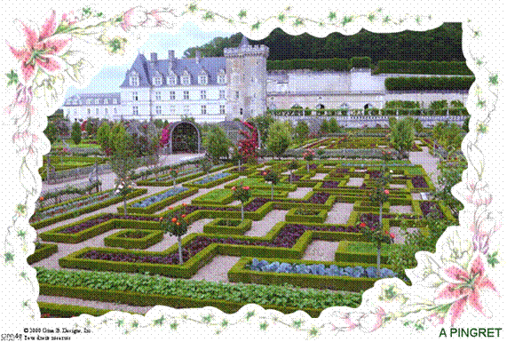

|
BRETAGNE COTE D'ARMORDU 03 AU 07 JUIN 2010
Qui a dit : « en Bretagne il pleut toujours ? »
Nous étions 35 pour un parcours de 5 jours au grand soleil dans une ambiance digne d'AZF avec des guides et un hébergement sensationnels
Le Mont St Michel « Merveille de l'Occident » par l'originalité de son site, la beauté de son architecture, est l'une des principales curiosités monumentales de France. Cet îlot rocheux de plus d'un kilomètre de circonférence s'élève à 80 m de haut et est rattaché à la Baie par une digue insubmersible construite en 1879. Au XXI° siècle le Mont St Michel perpétue sa tradition millénaire d'accueil. A l'époque des grandes marées, deux fois par mois, le spectacle du flux est admirable. L'amplitude des marées est la plus grande d'Europe. .

L'île de Bréhat nous a autant enthousiasmés par son tour de l'île et la découverte d'une floraison exceptionnelle due à la tiédeur de son climat. Lîle comprend deux phares le Paon et le Rosédo en plus de son sémaphore. Un moulin à marée construit au XII° siècle, il peut moudre le grain à chaque marée descendante : le meunier ouvre la vanne, et l'eau de mer retenue dans l'étang de 2 ha fait tourner la roue. Ses falaises les plus hautes de Bretagne ont été les témoins d'épisodes historiques. 134 aviateurs américains et canadiens s'embarquèrent vers l'Angleterre grâce aux résistants du réseau Shelburne. L'anse Cochat a gardé depuis son nom de code de « Plage Bonaparte ».
Ploumanach et son granit rose aux formes des plus bizarres taillé par l'érosion valait le coup d'�il ainsi que les sculptures non moins sympathiques des tailleurs de pierres.
Dinard au début du XIX° siècle est un petit village de pêcheurs puis pris son aspect de station balnéaire à partir du milieu du XIX° siècle avec l'arrivée des familles anglaises et des premiers adeptes de bains de mer.
Saint Malo , cité Corsaire au c�ur de la Côte d'Emeraude, berceau de Jacques Quartier est célèbre de par le monde, autant pour ses remparts que pour les grands évènements qui s'y déroulent : route du Rhum, Course des Grands voiliers, Transat Québec. 
Villandry, achevé vers 1536, est le dernier des grands châteaux bâtis sur le bord de la Loire à l'époque de la Renaissance. Villandry est construit par le ministre des Finances de François 1 er , Jean le Breton. Pour le compte de la couronne, il surveille et dirige la construction de Chambord auprès duquel il fait édifier une réplique « en miniature de Villandry »: Villesavin. Jean le Breton, pour édifier l'actuel château, fait raser une vieille forteresse du XII° siècle dont il ne reste aujourd'hui que les fondations et le donjon. C'est dans cette forteresse qu'a lieu le 4 juillet 1189, la « Paix des Colombiers » (nom de Villandry au Moyen Age) au cours de laquelle Henri II Plantagenêt, roi �Angleterre, vient reconnaître sa défaite devant Philippe Auguste, roi de France.

|